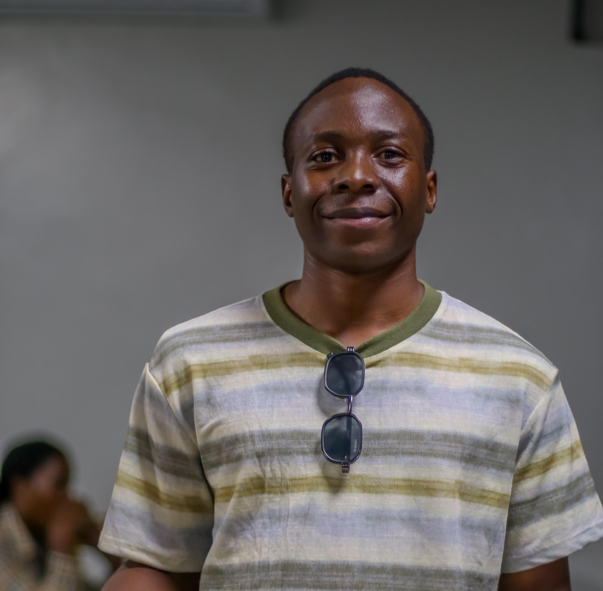

The Interfaculty Tournament Second Edition 2026 was organized under the 17th Guild Government of Cavendish University.
The tournament was coordinated by the Ministry of Games and Sports led by Hon. Min. Ssenyonga Carlton together with student leaders and organizers.

Hon. Min. Ssenyonga Carlton from the Ministry of Games and Sports under the 17th Guild Government of Cavendish University.
According to Hon. Min. Ssenyonga Carlton, the second edition of the Interfaculty Tournament was inspired by the success of the first edition and the growing interest of students who wanted a bigger competition.
“We were inspired by the success of the first edition as well as the desire of students who wanted to participate in a bigger version,” Carlton explained.
Carlton noted that the tournament aimed at building a lasting sports tradition at Cavendish University while promoting unity among students.
He also highlighted challenges such as transport, logistics and limited funding during the organization of the tournament.
“We choose to keep the costs low for students and avoid charging them money, which sometimes limits the budget,” he added.
Carlton further revealed that organizers plan to improve future editions through better attendance, increased prizes and greater involvement from the university administration.